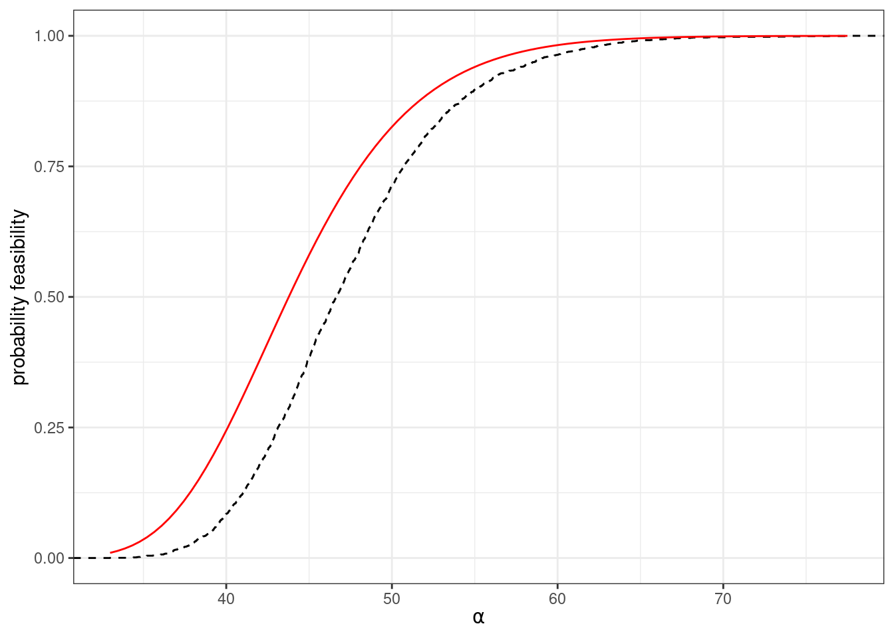
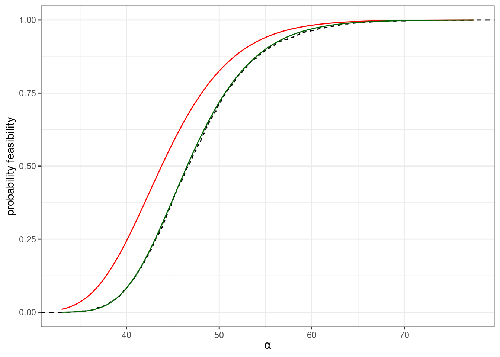

GLV with random parameters
All species growing logistically
Suppose we take \(n\) populations, each growing according to:
\[ \dot{x}_i = x_i (r_i - A_{ii} x_i) \]
with \(A_{ii} > 0\). We assume that the growth rates are sampled independently from a distribution: \(r_i \sim Q\), a distribution with mean \(0\), \(\mathbb E(r_i) = 0\) and symmetric about its mean, such that \(\phi(r_i) = \phi(-r_i)\), where \(\phi(\cdot)\) is the p.d.f. of distribution \(Q\). For example, we could choose \(r_i \sim \mathcal N(0, \sigma^2)\), or \(r_i \sim \mathcal U[-1, 1]\). Naturally, whenever \(r_i > 0\), the population will grow to \(x_i^\star = r_i / A_{ii}\). If \(r_i < 0\), on the other hand, the population will go extinct. Because of the symmetry around zero, each population has therefore probability \(1/2\) of persisting. When we have \(n\) populations, the number of coexisting populations \(\|k\|\) is a random variable following the binomial distribution:
\[ p(\|k\| | n) = \binom{n}{\|k\|} \frac{1}{2^n}\quad \|k\| \sim \mathcal B\left(n, \frac{1}{2}\right) \]
The random zoo
Now consider a GLV model with random parameters. We choose \(r_i\) from a distribution with mean zero and symmetric about the mean, and each interaction \(A_{ij}\) from a distribution with mean zero and symmetric about the mean. Moreover, we add a constant to the diagonal of the matrix such that the symmetric part of \(A\), \(H(A) = \frac{1}{2} (A + A^T)\) is positive definite. As we have seen before, this means that dynamics will always converge to a saturated equilibrium.
We now introduce a family of \(2^n\) matrices \(S_i\), with:
\[ \begin{aligned} S_1 &= \begin{pmatrix} 1 & 0 & 0 & \cdots & 0\\ 0 & 1 & 0 & \cdots & 0\\ 0 & 0 & 0 & \cdots & 0\\ \vdots & \vdots & \vdots &\ddots &\vdots\\ 0 & 0 & 0 & 0 &1 \end{pmatrix} = I_n\\ S_2 &= \begin{pmatrix} -1 & 0 & 0 & \cdots & 0\\ 0 & 1 & 0 & \cdots & 0\\ 0 & 0 & 1 & \cdots & 0\\ \vdots & \vdots & \vdots &\ddots &\vdots\\ 0 & 0 & 0 & 0 &1 \end{pmatrix} \\ S_3 &= \begin{pmatrix} 1 & 0 & 0 & \cdots & 0\\ 0 & -1 & 0 & \cdots & 0\\ 0 & 0 & 1 & \cdots & 0\\ \vdots & \vdots & \vdots &\ddots &\vdots\\ 0 & 0 & 0 & 0 &1 \end{pmatrix} \\ S_4 &= \begin{pmatrix} -1 & 0 & 0 & \cdots & 0\\ 0 & -1 & 0 & \cdots & 0\\ 0 & 0 & 1 & \cdots & 0\\ \vdots & \vdots & \vdots &\ddots &\vdots\\ 0 & 0 & 0 & 0 &1 \end{pmatrix}\\ \vdots\\ S_{2^n} &= \begin{pmatrix} -1 & 0 & 0 & \cdots & 0\\ 0 & -1 & 0 & \cdots & 0\\ 0 & 0 & -1 & \cdots & 0\\ \vdots & \vdots & \vdots &\ddots &\vdots\\ 0 & 0 & 0 & 0 &-1 \end{pmatrix} = -I_n\\ \end{aligned} \]
These matrices, called signature matrices are their own inverse (a matrix with this property is called involutory), and therefore, we have that \(S_i S_i = S_i^2 = I_n\). Geometrically, these matrices represent a reflection in each of the axes corresponding to the negated rows or columns.
We then consider what happens when we transform the parameters by multiplying them by \(S_i\). Take an arbitrary GLV system, and solve for the \(x\) that makes \(r + Ax = 0_n\):
\[ x = -A^{-1} r \]
The vector is a feasible equilibrium for the system if \(x > 0_n\). Now consider the transformed system:
\[ r' = S_i r \quad A' = S_iAS_i \]
Note that \(A'\) is similar to \(A\), and therefore has the same eigenvalues; moreover, \(\phi(r') = \phi(r)\) and \(\phi(A') = \phi(A)\), because of symmetry. Now compute the new solution
\[ \begin{aligned} x' &= -(S_iAS_i)^{-1} S_i r\\ &=-S_iA^{-1}S_i S_i r\\ &=-S_iA^{-1}r\\ &=-S_i x \end{aligned} \]
That is, the transformation changes the sign of the components of \(x\) corresponding to the negative coefficients in \(S_i\). Hence, for any possible choice of \(r\) and \(A\), there is only one possible choice of \(S_i\) that makes the equilibrium feasible. Because all matrices \(A'\) and all vectors \(r'\) have the same probability/density, then the probability of having a positive \(x\) is exactly \(1/2^n\). Thus, a system with random parameters and a strongly stable matrix of interactions has the same probability of feasibility as that of a system in which populations are not interacting!
We have seen that when \(A\) is such that \(H(A)\) is negative definite, dynamics always converge to a saturated equilibrium. We want to compute the probability of finding a saturated equilibrium, in which populations belonging to set \(k\) coexist, and the remaining populations cannot invade when rare.
We thus divide \(x\), \(r\) and \(A\) as:
\[ x = \begin{pmatrix} y\\ z \end{pmatrix} \quad \tilde{x} = \begin{pmatrix} y^\star\\ 0_{\|n-k\|} \end{pmatrix} \quad A = \begin{pmatrix} \mathfrak A & \mathfrak B\\ \mathfrak C & \mathfrak D \end{pmatrix}\quad r = \begin{pmatrix} \mathfrak r\\ \mathfrak s \end{pmatrix} \]
We also divide \(S_i\) into:
\[ S_i = \begin{pmatrix} S_{i}^{(k)} & 0_{\|k\|, \|n-k\|}\\ 0_{\|n-k\|, \|n\|} & S_{i}^{(n-k)} \end{pmatrix} \]
When we use the signature matrix, the vector \(\mathfrak s\) and the matrix \(\mathfrak C\) become:
\[ \mathfrak s' = S_i^{(n-k)} \mathfrak s\quad \mathfrak C' = S_i^{(n-k)} \mathfrak C S_i^{(k)} \]
The feasibility and nonivasibility condition, for a given choice of \(S_i\) read:
\[ \begin{cases} y' &= S_i^{(k)} (-\mathfrak A^{-1}\mathfrak r) &> 0_{\|k\|}\\ D(z)^{-1} z &=S_i^{(n-k)}(\mathfrak s + \mathfrak C y') &< 0_{\|n-k\|}\\ \end{cases} \]
There is only one choice out of \(2^{\|k\|}\) that makes \(y' > 0_{\|k\|}\); moreover, there is only one choice of \(S_i^{(n-k)}\) that fulfills the noninvasibility condition, out of \(2^{\|n-k\|}\) equiprobable choices. Then, we have that the probability of finding exactly \(\|k\|\) populations coexisting at the saturated equilibrium, with the remaining \(\|n-k\|\) that cannot invade is exactly \(1/2^{\|k\|} \cdot 2^{\|n-k\|} = 1/2^n\). The number of coexisting populations at the saturated equilibrium follows the binomial distribution:
\[ p(\|k\| | n) = \binom{n}{\|k\|} \frac{1}{2^n}\quad \|k\| \sim \mathcal B\left(n, \frac{1}{2}\right) \]
exactly as for the non-interacting case.
Random zoo and experimental data
We have seen above that in a (stable) GLV model with random interactions, the expected number of species coexisting is proportional to the size of the initial pool: \(\mathbb E(\|k\|) = n/2\). We start the system with all the populations present, and we assemble a final community from the top-down. Interestingly, this type of experiment is carried out with increasing frequency in microbial ecology, where a microbial community taken from a certain environment is challenged with a new synthetic environment in the laboratory. For example, Leonora Bittleston and colleagues extracted the microbial communities inhabiting 10 distinct pitcher plants, and cultured them in synthetic media in the laboratory for two months. They plot the number of microbial strains present at the beginning of the experiment (Day 3, such that the strains that cannot grow in the medium are filtered out) and after two months (Day 63), finding a striking linear relationship between the initial size \(n\) and that at the end of the experiment \(\|k\|\):

Competitive GLV
We now consider a more complicated case, in which we have a competitive GLV system:
\[ \dot{x}_i=x_i r_i \left(1-\sum_j M_{ij}x_j\right) \]
where the matrix of interactions is given by the sum of two matrices:
\[ M = \alpha I + B \]
and \(B\) is a random matrix, with entries sampled independently from a distribution with mean \(\mu > 0\), and unit variance. We want to calculate the probability that the system has a feasible equilibrium, and how the probability changes when we increase \(\alpha\).
The value of \(\alpha > 0\) can be considered the “excess” intraspecific interaction in the system. To show that this value influences feasibility, we start by showing that a sufficiently large \(\alpha\) guarantees feasibility.
Effect of average interaction strength on feasibility
We have taken \(M = \alpha I + B\); call \(m\) the vector of column means of \(B\). Here we show that, as long as \(m > 0_n\), its actual value has no effect on feasibility. We can write:
\[ \begin{aligned} M &= \alpha I + B \\&= \alpha I + 1_n m^T + C \end{aligned} \]
where \(C\) has columns summing to zero (\(1_n^T C = 0_n^T\)). For feasibility, we need the solution:
\[ \begin{aligned} Mx &= 1_n\\ x &= M^{-1}1_n > 0 \end{aligned} \]
We consider the simpler system:
\[ \begin{aligned} (\alpha I + C)y &= 1_n\\ y &=(\alpha I + C)^{-1}1_n \end{aligned} \] and write the solution \(x\) as a rank-1 update of the solution of the system in \(y\).
Sherman-Morrison formula
Suppose that \(A + uv^T\) is invertible, where \(A\) is a \(n\times n\) matrix, and \(u\) and \(v\) are column vectors of size \(n\). The matrix is invertible as long as \(1 + v^T A^{-1}u \neq 0\).
If this is the case
\[ (A + u v^T)^{-1} = A^{-1} - \frac{1}{1 + v^T A^{-1}u} A^{-1} u v^T A^{-1} \]
This formula is useful when we need to update the matrix inverse after a rank-1 perturbation.
Using the Sherman-Morrison formula, we obtain:
\[ \begin{aligned} x &= ((\alpha I + C) + 1_n m^T)^{-1}1_n\\ &= \left((\alpha I + C)^{-1} - \frac{1}{1 + m^T ((\alpha I + C)^{-1}) 1_n} (\alpha I + C)^{-1} 1_n m^T (\alpha I + C)^{-1}\right) 1_n\\ &= y - \frac{1}{1 + m^Ty} y m^T y\\ &= \frac{1}{1 + m^T y} y \end{aligned} \]
Thus, \(x\) and \(y\) are proportional to each other, with constant of proportionality \(1 / (1 + m^T y)\). Then \(x > 0_n\) when either a) \(y > 0_n\), and \(1 + m^T y > 0\), or b) \(y < 0_n\) and \(1 + m^T y < 0\). Sum the equations in \(y\):
\[ \begin{aligned} 1_n^T (\alpha I + C) y &= 1_n^T 1_n\\ \alpha 1_n^T y &=n\\ \frac{1}{n} 1_n^T y &= \frac{1}{\alpha} \end{aligned} \]
This means that \(y\) cannot be all negative; then given that for \(y>0_n\) and \(m > 0_n\) we have \(1 + m^Ty > 0\), we have that \(x\) is feasible if and only if \(y\) is feasible.
This means that any matrix that can be written as \(B = C + 1m^T\) with \(m > 0_n\) belongs to the same class for feasibility—the exact value of \(m > 0_n\) does not matter.
A sufficiently large \(\alpha\) guarantees feasibility
We want to show that the system of equations
\[ (\alpha I + C)y = 1_n \]
has a positive solution \(y > 0_n\) for \(\alpha\) large enough. To this end, we first divide both sides by \(\alpha > 0\):
\[ \left(I + \frac{1}{\alpha} C\right)y = \frac{1}{\alpha} 1_n \]
We have seen above that \(\alpha 1_n^T y/n = 1\); we multiply the r.h.s. by this value, obtaining:
\[ \begin{aligned} \left(I + \frac{1}{\alpha} C\right)y &= \frac{1}{\alpha} 1_n \frac{\alpha}{n} 1_n^Ty\\ \left(\frac{1}{\alpha} C\right)y + y&= \frac{1}{n} 1_n1_n^Ty\\\\ \left(\frac{1}{n} 1_n1_n^T - \frac{1}{\alpha} C\right)y &= y \end{aligned} \]
Thus, we have that \(y\) is a right eigenvector of matrix \(\frac{1}{n} 1_n1_n^T - \frac{1}{\alpha} C\), associated with \(\lambda = 1\).
Perron-Frobenius theorem
The matrix \(A\) has all coefficients positive \(A_{ij} > 0\, \forall i,j\).
Then the matrix has a single positive real eigenvalue \(\rho\) (spectral radius, or Perron root) such that \(|\lambda_i| < \rho\) for all other eigenvalues. Moreover, the eigenvalue is associated with an eigenvectors that can be made all positive (Perron eigenvector).
If we choose \(\alpha = \alpha_\infty\) such that \(C_{ij} / \alpha_\infty < 1/n\), then the matrix \(\frac{1}{n} 1_n1_n^T - \frac{1}{\alpha_\infty} C\) has only positive coefficients; moreover all columns sum to unity and therefore the spectral radius is \(\rho = 1\). Because of Perron-Frobenius theorem, \(y > 0_n\).
Models with random interactions
We have seen above that the system \((\alpha I + C) y = 1_n\), with \(C^T1_n = 0_n\) and \(\alpha > 0\) has solution \(y\) with mean \(\frac{1}{n}1_n^Ty = \frac{1}{\alpha}\). If the populations are statistically equivalent, i.e., there is no special structure making some of the populations necessarily different from the rest, we can generalize this further:
\[ \begin{aligned} \left( \sum_j y_j \right)^2 & = \dfrac{n^2}{\alpha^2}\\ \sum_j (y_j)^2 + \sum_i \sum_{j \neq i} y_i y_j &= \dfrac{n^2}{\alpha^2}\\ n \mathbb E((y_i)^2) + n (n-1) \mathbb E( y_i y_j) &= \dfrac{n^2}{\alpha^2}\\ \mathbb V(y_i) + \mathbb E(y_i)^2 + (n-1)\left( \mathbb{Cov}(y_i, y_j) + \mathbb E(y_i) \mathbb E(y_j) \right) &= n \mathbb E(y_i)^2\\ \mathbb V(y_i) + \mathbb E(y_i)^2 + (n-1)\left( \mathbb{Cov}(y_i, y_j) + \mathbb E(y_i)^2 \right) &= n \mathbb E(y_i)^2\\ \mathbb V(y_i) + (n-1) \mathbb{Cov}(y_i, y_j) &= 0\quad , \end{aligned} \]
where we have exploited the fact that, for a model with statistically equivalent populations, \(\mathbb E(y_i) \mathbb E(y_j) = \mathbb E(y_i)^2\), and that the covariance \(\mathbb{Cov}(y_i, y_j)\) must be the same for all \(i,j\). Thus, for any unstructured model, we have that the expected covariance is negative. Moreover, for a given variance \(\mathbb V(y_i) = \sigma^2_{y}\), we have: \(\sigma^2_{y} + (n-1) \sigma^2_{y} \mathbb{Cor}(y_i, y_j) = 0\) and thus \(\mathbb{Cor}(y_i, y_j) = -1/(n-1)\) for all \(i\) and \(j\). Note that this is the maximally negative correlation one can have for equicorrelated random variables. Thus, \(y\) has expectation \((1/\alpha) 1_n\), and covariance matrix \(\sigma^2_{y} \left( \frac{n}{n-1} I - \frac{1}{n-1} 1_n 1_n^T \right)\). Importantly, the only difference between different unstructured models with random parameters is the value of \(\sigma^2_{y}\), while the rest is unchanged. Analyzing increasingly complex models therefore reduces to the problem of determining the variance of \(y\).
Approximating feasibility
The joint distribution of \(y\) is well-approximated by a multivariate normal in the limit of large \(n\), because of the central limit theorem.
Therefore, \(y\) is asymptotically distributed as
\[ y \sim \mathcal N \left( \frac{1}{\alpha} \mathbb 1_n, \sigma^2_y \left(\frac{n}{n-1} I - \frac{1}{n-1} \mathbb 1_n \mathbb 1_n^T \right) \right)\quad . \]
Because the joint distribution of \(y\) is well-approximated by a multivariate normal, we can calculate the probability of feasibility as a function of \(\alpha\), \(n\), as well as \(\sigma^2_{y}\) by integrating the probability density function in the positive orthant of \(\mathbb R^n\)—what is called an ``orthant probability’’:
\[ p_F (n, \alpha, \sigma^2_{y}) = \int_0^{\infty} \int_0^{\infty} \cdots \int_0^{\infty} \phi(y) d y_1 d y_2 \cdots d y_n \quad, \]
where \(\phi(y)\) is the probability density function of the normal distribution above. For equicorrelated random variables, the multiple integral above can be reduced to a single integral (albeit involving complex variables when the correlation is negative, such as in this case). Equivalently, one can use the theory of order statistics to write the density function of the first order statistics (i.e., the \(\underset{i}{\min} (y_1, y_2, \ldots, y_n)\)) and integrate this density function for all positive values of the minimum.
When \(n\) is large, however, one can safely ignore the negative correlation between the random variables \(y_i\), and pretend they are independent. In this case, we want to determine the probability that all \(y_i > 0\). If we subtract the mean from both sides, and call \(\zeta_i = y_i - 1/\alpha\), we have that the system is feasible when all \(\zeta_i> -1/\alpha\). Dividing both sides by \(\sigma_{y}\) and calling \(\xi_i = \zeta_i / \sigma_{y}\) we have that feasibility is ensured whenever all the \(\xi_i\), following the standard normal distribution, are larger than \(-1/(\alpha \sigma_{y})\); because the standard normal is symmetric about zero, we can finally write:
\[ p_F(n,\alpha, \sigma^2_{y}) \approx \Phi\left( \dfrac{1}{\alpha \sigma_{y}}\right)^n\quad, \]
where \(\Phi(\cdot)\) is the cumulative distribution function for a standard normal distribution. The approximation is going to be accurate when \(n\) is large. Again, we have reduced the problem of computing the probability of feasibility for a system of a known size \(n\) and given level of self-regulation \(\alpha\) to the problem of computing \(\sigma_{y}\) for the specific model and parameters.
Neumann series
If the matrix \(T\) has spectral radius \(\rho (A) < 1\) (i.e., the maximum absolute value of its eigenvalues is less than one), then we can write the inverse
\[ (I-T)^{-1} = \sum_{k = 0}^{\infty} T^k \]
Where \(T^0 = I\).
We have
\[ \begin{aligned} (\alpha I + C) y &= 1_n\\ \left(I + \frac{1}{\alpha}C\right) y &= \frac{1}{\alpha} 1_n\\ y &= \frac{1}{\alpha}\left(I + \frac{1}{\alpha}C\right)^{-1} 1_n\\ y &= \frac{1}{\alpha} \sum_l\left(-\frac{1}{\alpha} C\right)^l 1_n\\ y &\approx \frac{1}{\alpha} \left(1_n - \frac{1}{\alpha} C 1_n + \frac{1}{\alpha^2} C^2 1_n + \cdots\right) \end{aligned} \]
Taking only the first two terms, and computing the variance, we obtain:
\[ \begin{aligned} \sigma^2_y &= E(y^2) - E(y)^2\\ &= \frac{1}{n} y^Ty - \frac{1}{\alpha^2}\\ &\approx \frac{1}{n \alpha^2} (1_n - \frac{1}{\alpha} C 1_n)^T (1_n - \frac{1}{\alpha} C 1_n) - \frac{1}{\alpha^2}\\ &\approx \frac{1}{n\alpha^2} (1_n^T 1_n - \frac{1}{\alpha} 1_n^T C^T 1_n - \frac{1}{\alpha}1_n^T C 1_n + \frac{1}{\alpha^2} 1_n^T C^T C 1_n)- \frac{1}{\alpha^2}\\ &\approx \frac{1}{n\alpha^2} (n - 0 - 0 + \frac{1}{\alpha^2} 1_n^T C^T C 1_n)- \frac{1}{\alpha^2}\\ &\approx \frac{1}{n\alpha^4} 1^T_n C^T C 1_n \end{aligned} \] Suppose that \(B_{ij} \sim \mathcal N(0,1)\) then, plugging in \(C = B - 1_nm^T\), with \(B^T 1_n= n m\) we obtain:
\[ \begin{aligned} \sigma_y^2 &\approx \frac{1}{n \alpha^4} 1_n^T (B^T - m 1_n^T) (B - 1_nm^T)1_n\\ &\approx \frac{1}{n \alpha^4} 1_n^T \left( B^T B - m 1_n^T B - B^T1_nm^T + m 1_n^T 1_n m^T\right) 1_n\\ &\approx \frac{1}{n \alpha^4} 1_n^T \left( B^T B - n m m^T - n m m^T + n m m^T \right) 1_n\\ &\approx \frac{1}{n \alpha^4} \left( 1_n^T B^T B 1_n - n 1_n^T m m^T 1_n\right)\\ \end{aligned} \]
Finally, we take expectations of both terms:
\[ \mathbb E(1_n^TB^T B 1_n) = \mathbb E\left( \sum_i \left(\sum_{j} B_{ij} \right)^2 \right) = n^2 \]
\[ \mathbb E((m^T1_n)^2)= \mathbb E\left(\left(\frac{1}{n}\sum_{ij} B_{ij} \right)^2\right)= \frac{1}{n^2} \mathbb E\left(\left(\sum_{ij} B_{ij} \right)^2\right) = 1 \]
Putting them together, we obtain:
\[ \mathbb E(\sigma_y^2) \approx \frac{1}{n \alpha^4} (n^2 - n) = \frac{n-1}{\alpha^4} \]
Which gives us a reasonable approximation for the probability of feasibility. For example, we compute numerically the probability that a system of size \(n = 250\) is feasible for different values of \(\alpha\):
A more accurate approximation of feasibility
Expanding the Neumann series even further, or using a different technique based on resolvents, we find a better approximation for the \(\sigma_y^2\):
\[ \mathbb E(\sigma_y^2) \approx \frac{n-1}{\alpha^4 - (n-1)\alpha^2} \]

The analysis can also be extended to more complicated cases in which the entries in \(B\) are correlated.
Only equilibria
For matrices with random entries, it is easy to calculate the value of \(\alpha\) that would be needed to have \(H(\alpha I + B)\) positive definite (such that any feasible equilibrium would be globally stable). In particular, if \(B_{ij} \sim \mathcal N(\mu, \sigma^2)\), the eigenvalues of \(B\) are contained in a circle in the complex plane (circular law), with radius \(\sqrt{n \sigma^2}\), plus a single, real outlier at approximately \(n \mu\). If we add the matrix \(\alpha I\), all the eigenvalues are shifted of \(\alpha\).
The eigenvalues of \(H(\alpha I + B) = \alpha I + \frac{1}{2} (B + B^T)\) are all real (because the matrix is symmetric). The entries of \((B_{ij} + B_{ji})/2\) are normally distributed, with mean \(\mu\) and variance \(\sigma^2 / 2\) (because the variances add up, and dividing all the entries by 2 divides the variance by 4).
The bulk of the eigenvalues are approximately distributed according to Wigner’s semicircle law:
\[ \phi(\lambda) = \frac{2}{\pi R^2} \sqrt{R^2 - \lambda^2} \]
where in this case \(R = \sqrt{2 n \sigma^2}\)
and with an eigenvalue at \(n \mu\). For stability, we need therefore to have \(\alpha > \sqrt{2 n}\). What is the probability of feasibility at this value of \(\alpha\)?
Thus, for large competitive systems of this type, feasibility typically implies stability. But given that coexistence requires a feasible equilibrium, this means that in these systems dynamics will always converge to a globally stable saturated equilibrium, and we will never observe cycles or chaos.
References and further readings
Coexistence in GLV with random parameters and stable interaction matrix
- Serván, C.A., Capitán, J.A., Grilli, J., Morrison, K.E. and Allesina, S., 2018. Coexistence of many species in random ecosystems. Nature ecology & evolution, 2(8), pp.1237-1242.
Experiment on pitcher plant microbial communities
- Bittleston, L.S., Gralka, M., Leventhal, G.E., Mizrahi, I. and Cordero, O.X., 2020. Context-dependent dynamics lead to the assembly of functionally distinct microbial communities. Nature communications, 11(1), p.1440.
On the existence of chaos in competitive GLV
Smale, S., 1976. On the differential equations of species in competition. Journal of Mathematical Biology, 3(1), pp.5-7.
Vano, J.A., Wildenberg, J.C., Anderson, M.B., Noel, J.K. and Sprott, J.C., 2006. Chaos in low-dimensional Lotka–Volterra models of competition. Nonlinearity, 19(10), p.2391.
Computing the probability of feasibility in random GLV
Stone, L., 2016. The Google matrix controls the stability of structured ecological and biological networks. Nature communications, 7(1), p.12857.
Bizeul, P. and Najim, J., 2021. Positive solutions for large random linear systems. Proceedings of the American Mathematical Society, 149(6), pp.2333-2348.
Coexistence in random GLV competitive communities
- Lechón-Alonso, P., Kundu, S., Lemos-Costa, P., Capitán, J.A. and Allesina, S., 2024. Robust coexistence in ecological competitive communities. bioRxiv, pp.2024-07.